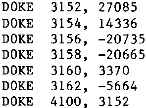

INMC 80 News |
February–April 1981 · Issue 3 |
| Page 4 of 55 |
|---|
Firstly, in reply to Dr. G R Kelman, may I say that I appreciate things like Lawrence, Scurrilous Musings, spoof letters, and most things with humour in. Life is too boring to be taken seriously, especially all the time, keep them coming!
Secondly, will you please credit the person who wrote the Space Invaders program published in the last issue. As I am a beginner at machine code (and not much better at BASIC?) I have put off trying to write a Space Invaders game, having given up trying in BASIC because of the speed (or lack of it!). I would like to thank him, albeit in his absence, but I cannot do this if I do not know who he is! [Ed – Sorry, we don’t know either!].
Come to that, I would like to thank everyone who contributes, and makes this THE most interesting computer publication around.
There you are, the unsolicited testamonial that you promised me 10.00 for!
Please, keep up the good work, especially things like the Kiddies Guide to Z80 Programming, etc.
In fact, just keep up the good work.
K. Brown, B.F.P.O.
Many thanks for the library Programs that I purchased recently. Space Invasion, 3D Noughts and Crosses, Magic Labyrinth and Startrek. All brilliant work but I have had trouble with the last mentioned two programs. Far be it for me to criticise (I am only a novice) but may I make the following comments.
Magic Labyrinth: There is a syntax error in Line 2440. The decimal points should both be upward arrows. (See elsewhere in this issue to see why that happened – Ed.)
Startrek: This is written for Nascom 2 with graphics but it does not say anything about that on the Program. This drove me nuts until that fact dawned upon me at 3 a.m. in the morning! Also I cannot get the machine code routine to work properly. I have a Nascom 1 with “Bits & P.C.s” graphics and the result was a mightmare of chaos. For owners of Nascom 1 with or without graphics, may I suggest the following alterations. Rewrite the machine code using Lines 90 to 130 inclusive with this:

Change Line 5340 to: IF I8<>31 GOTO 5360 (13 is not Nascom 1 C/R)
In Line 5760 and 5770 change CHR$(129) to CHR$(127)
In Line 5710 change all three CHR$( ) to suit your own particular graphics capability
and imagination. The symbols will be used as Enterprise, Klingons and Starbases
respectively.
Well that’s it. Now it works. Anyway, it has been great fun sorting it all out and I have learned a great deal from so doing.
Ray Ridgwell, Gt. Torrington, Devon
| Page 4 of 55 |
|---|